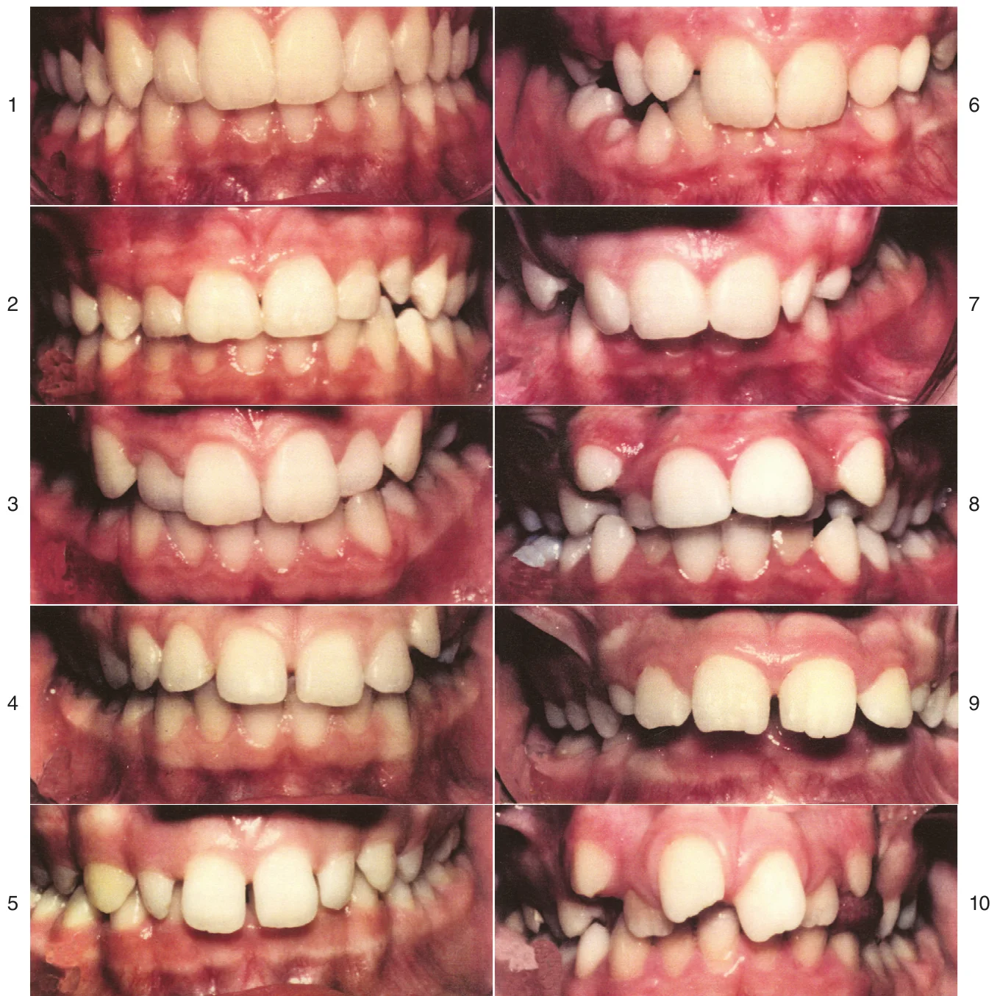

نسخه استخراجشده؛ ترجمه یا تأیید علمی انجام نشده است. وضعیت: captured
«نیاز به درمان» یک قضاوت شخصی نیست — میشود آن را عدد کرد. رایجترین ابزار، IOTN است که دو مؤلفه دارد:
مؤلفهی سلامت دندانی (DHC) — پنج درجه بر پایهی شدیدترین یافتهی موجود: اورجت، کراسبایت، جابهجایی نقاط تماس، دندان نهفته و مانند اینها. درجهی ۴ و ۵ یعنی نیاز قطعی به درمان.
برای پیدا کردن شدیدترین یافته، به ترتیب MOCDO نگاه کن: Missing (دندان غایب یا نهفته)، Overjet، Crossbite، Displacement (جابهجایی نقاط تماس) و Overbite. دندان نهفته (بهجز مولر سوم) بهتنهایی درجهی ۵ است، اورجت بیش از ۶ میلیمتر درجهی ۴، و درجهی ۳ ناحیهی مرزی است که در آن جزء زیبایی تصمیم را روشن میکند. نمرهی یافتهها هیچوقت با هم جمع نمیشود.
مؤلفهی زیبایی (AC) — ده عکس استاندارد که ظاهر بیمار با نزدیکترینشان تطبیق داده میشود. ۸ تا ۱۰ نیاز قطعی، ۵ تا ۷ متوسط یا مرزی، ۱ تا ۴ نیاز کم.
نکتهی کلیدی: این دو مؤلفه جداگانه سنجیده میشوند و میتوانند نتیجهی متفاوتی بدهند — دندان نهفتهای که از بیرون دیده نمیشود، DHC بالا و AC پایین دارد.

شاخص دوم، DAI است که برخلاف IOTN، یافتههای متعدد را در یک فرمول وزندار جمع میکند و به یک عدد واحد میرسد.
چرا این شاخصها اهمیت دارند؟ سه کاربرد عملی:
و یک هشدار: هیچ شاخصی جای قضاوت بالینی را نمیگیرد. شاخص، شدت یافته را میسنجد؛ تصمیم درمانی به شکایت بیمار، سن، همکاری و ظرفیت بافتی او هم بستگی دارد.
شاخصها ابزار خوبیاند، ولی دو خطای رایج با آنها رخ میدهد.
خطای اول: درمان کردن عدد بهجای بیمار. بیماری با DHC درجهی ۴ که هیچ شکایتی ندارد و همکاری هم نمیکند، لزوماً کاندید درمان نیست. عدد شدت یافته را میگوید، نه ضرورت مداخله را.
خطای دوم: رد کردن بیمار به دلیل عدد پایین. بیماری با AC درجهی ۴ اما نارضایتی واقعی از لبخندش، شکایت معتبری دارد. شاخص برای تصمیمگیری در سطح جمعیت طراحی شده، نه برای رد کردن یک فرد.
قاعده: شاخص را برای اولویتبندی و ارتباط به کار ببر، نه بهعنوان دروازهبان درمان.